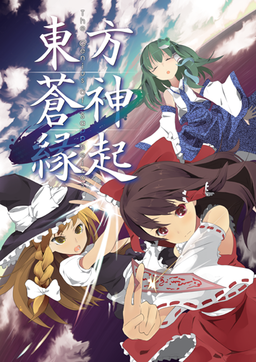

- Welcome to Touhou Wiki!
- Please register to edit. For assistance, check in with our Discord server or IRC channel.
The Genius of Sappheiros
The Genius of Sappheiros | |
|---|---|
|
 | |
| Developer |
Strawberry Bose |
| Publisher |
Strawberry Bose |
| Released |
Original version: |
| Genre |
Role-Playing Game |
| Gameplay |
Single-player story mode |
| Platforms | |
Touhou Soujinengi The Genius of Sappheiros (東方蒼神縁起, lit. "Blue God Omen") is a fan-made Touhou Project game and a traditional turn-based RPG released at Comiket 78, heavily influenced by traditional console roleplaying games such as the SaGa Series. Despite being an RPG, it follows a traditional Touhou stage-based format, with each stage being its own dungeon. The game is made using the Unity game engine.
An updated version was announced for the PlayStation Vita version, under the name of "Touhou Soujinengi V", as part of Play, Doujin!.
Gameplay[edit]
- Main article: Gameplay
Gameplay follows a traditional turn-based format, where all of the party's commands are selected at once and executed based on speed in tandem with enemy's actions. In terms of resemblance to other games, it is half Romancing Saga and half Sekaiju no Meikyuu. Many things from this game are copied directly from Hachikuma's older game called はぢきせ. The party can have up to five active members at a time, from twelve possible characters (seventeen in the expansion), with a sixth providing a support bonus to the active members while not participating in combat. Each of these characters can be developed via both traditional leveling up and investing in Power, a separate type of level that can be placed into one of 14 different categories, four of which are related to the character's personal abilities, four of which are weapon classes they can wield (including one unique class for each character), and their six core statistics, to become better in each area.
Story[edit]
- Main article: Story
It's a normal day in Gensokyo when Reimu Hakurei notices a strange fog rolling in. All across Gensokyo, residents witness this fog weakening and killing a great many lesser youkai. At the behest of Yukari Yakumo, she joins forces with Marisa Kirisame, Sanae Kochiya, and Aya Shameimaru to investigate the fog's appearance...
Additional information[edit]
- Characters
- Equipment
- Bestiary
- Walkthrough
- Miscellaneous
- Status Effects
- Formations
- Formations/Bonuses
The Genius of Sappheiros: Lingering Summer Heat[edit]
Lingering Summer Heat (東方蒼神縁起 残暑, romanized Touhou Soujinengi Zansho) is an expansion released at Comiket 79, 30th December, 2010. It introduces five new playable characters as well as new equipment, stages and quests. It also features new balance and skill animations.
The Genius of Sappheiros: Weekend[edit]
Weekend (東方蒼神縁起 －週末, romanized Touhou Soujinengi Shuumatsu) is a re-release of the game and its expansion, released at Reitaisai 9, in 27 May, 2012. It features a heavy rebalancing of the rates for dropped items and Satori's Learning, changes some of the recipes (with the most notable one being the recipe for the Kusanagi, which now only requires 5 Iron as opposed to 30), removes the feature that made you lose all of your "unsaved" items after getting wiped out in a dungeon, and adds a few new things such as a mini-map and an easy mode you can toggle on or off whenever you want. On easy mode, you deal more damage, take less damage, your status effects have a higher chance to work and the experience penalty on killing enemies at a lower level is reduced. You can also now refight the final boss whenever you want during the expansion, which means that Kagami's Hyper Fang Crush is no longer permanently missable and can be learned by Satori whenever you want.
It is currently the "lightest" of the three releases, using less of the computer's resources while running at a considerably faster speed than the other releases, most of the time even eliminating lag of the sort.
Touhou Soujinengi V: The Genius of Sappherios[edit]
A port of The Genius of Sappherios for the PlayStation Vita. The port features a 16:9 widescreen support rather than the 4:3 screen ratio on the original game. Other changes such as new allies, game balance readjustments and new extra end-game content.
The game is currently available in Japan, only through the PlayStation store for ¥3,000.
External links[edit]
- Japanese wiki (translation by Google Translate)
- Strawberry Bose
- Translated Manual
- Translation in progress for storyline (videos)
- English translation patch Requires v2.09 update and the Lingering Summer Heat expansion.
- Weekend Version English translation patch Requires v3.1 (Genius of Sappheiros Weekend).
- Touhou Soujinengi V website (Japanese)
See also[edit]
- Devil of Decline, another RPG created by the same developers, released Comiket 81
- The Nightmare of Rebellion, the last of Strawberry Bose's trilogy, released Comiket 85